文章類型
付費文章
方格子付費專欄文章整理，適合想深入追蹤公司研究、產業判斷與資本市場筆記的讀者。
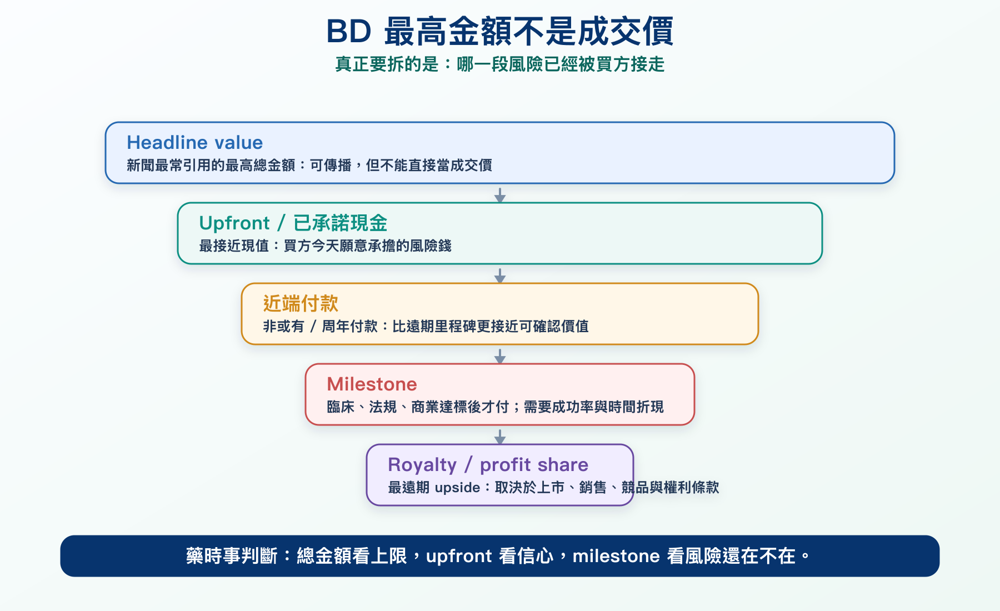
【付費深度商業分析文章系列】BD 最高金額不是成交價：真正要拆的是誰承擔了風險
BD 交易不能只看最高總金額。真正要拆的是 upfront、近端付款、遠期 milestone、royalty / profit share，以及買方到底接走了哪一段風險。
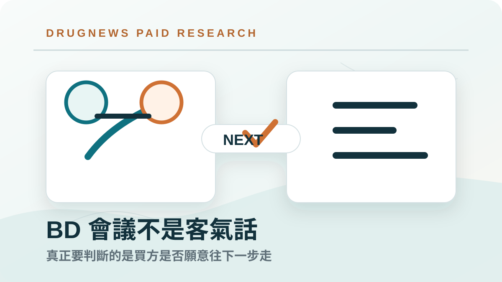
大藥廠的客氣話，真的別太當真
很多 台灣的生技公司 做完一場 大藥廠 一對一會議後，最容易陷入一種甜蜜誤會。 會議氣氛很好。 對方科學家頻頻點頭。 BD 問題很精準。 最後還留下一句：「Interesting, let’s discuss internally.」 然後團隊回到公司，大家開始覺得事情好像有戲。有人說對方
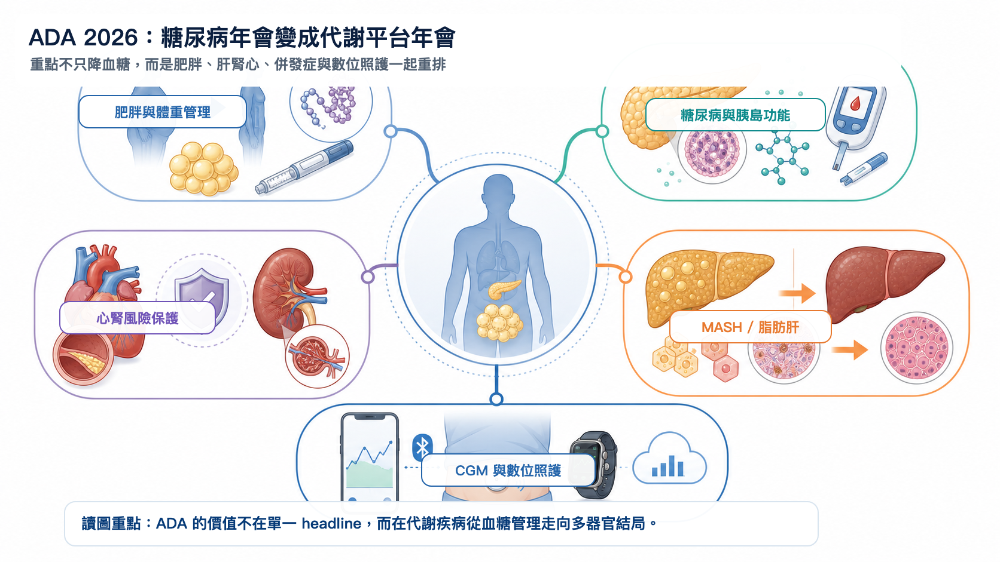
ADA 2026 會後深度判讀包：GLP-1 後半場，為什麼已經不是「誰減重比較多」？
ADA 2026 會後深度判讀：從 retatrutide、口服 GLP-1、小分子 incretin、代謝共病與 CGM 照護，拆解 GLP-1 後半場如何從減重競賽走向代謝疾病平台。

【商業分析】亞果生醫暴漲後，合理估值到底是多少？從三類醫材、患者池到 rNPV 重算一遍
投資理財內容聲明 本文為產業研究與估值框架分析，目的在於拆解生技醫藥公司價值驅動因子、患者池、手術池、醫材證照、通路放量、財務結構與資本市場變數，不構成任何投資建議、買賣推薦或收益保證。文中部分估值參數為藥時事模型假設，所有數字都應該隨公司財報、股本變化、上市櫃時程、證照進展、訂單放量、醫院採用與市
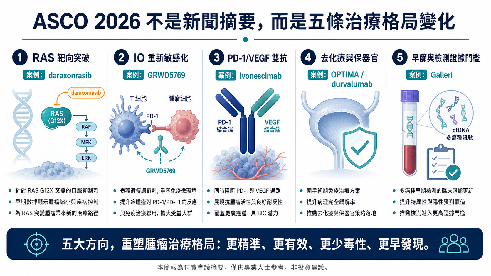
ASCO 2026 會後深度判讀包：哪些新藥真的改變治療格局，哪些只是會場熱度？
投資理財與醫療內容聲明：本文為醫藥產業研究、臨床資料判讀與新藥開發趨勢整理，不構成任何投資建議、買賣建議、醫療診斷或治療建議。臨床資料、監管狀態與藥品適應症可能隨正式發表、期刊全文、監管審查與各國上市核准而改變。臨床用藥請依各國核准仿單、專科醫師判斷與正式治療指引為準。 2026 年 ASCO 最

【基本面系列】逸達合理估值是多少？CAMCEVI 是現金流還是選擇權？
逸達不是純夢想股，也還不是完全兌現的獲利股。本文拆 CAMCEVI 已上市現金流、3 個月劑型與海外 CPP 增量、FP-045 與 FP-025 選擇權及 SOTP 估值。

管線估值：為還沒上市的未來定價，BD 最難也最值錢的一課
一個新藥，從實驗室走到臨床，再從臨床走到上市，燒錢速度常常快得嚇人。 但如果成功，回報也可能大到改變一家公司的命運。 這就是生技製藥產業最迷人的地方，也是最殘酷的地方：在產品真正賣錢以前，市場就必須先替它定價。問題是，這些資產很多時候還沒有營收，甚至還沒有大規模臨床資料，卻已經要進行授權、併購、
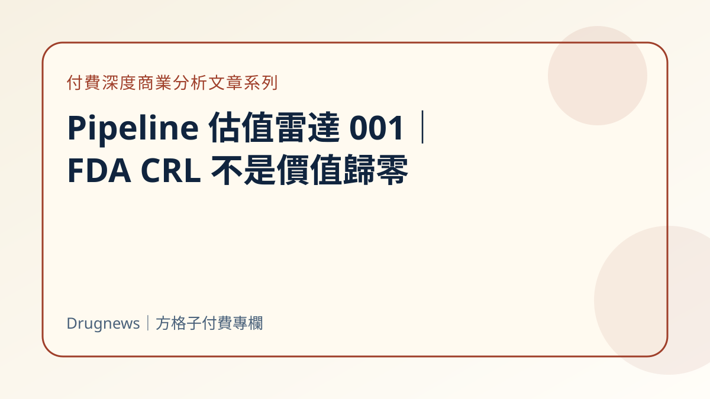
Pipeline 估值雷達 001｜FDA CRL 不是價值歸零，而是估值參數重排
FDA CRL 不該只看成藥證失敗，而是要拆成產品、臨床、CMC、label 與補件完整性，重算成功率、上市時間、峰值銷售與稀釋風險。

〖基本面系列〗全福生技合理估值是多少？BRM421 是乾眼症金礦，還是市場把眼科平台夢買得太早？
全福不是單純乾眼症大市場概念股，也不是失敗新藥股；本文拆解 BRM421、BRM424、PDSP 平台、現金與稀釋風險，重算合理估值區間。
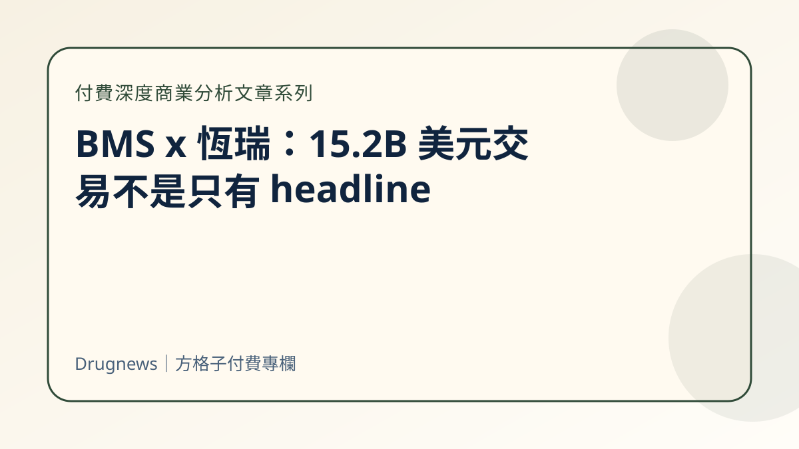
BD 解剖室 001｜BMS x 恆瑞：15.2B 美元交易不是「中國創新藥很強」這麼簡單，而是大藥廠正在買一套早期開發
BMS x 恆瑞最高 15.2B 美元合作不能只看 headline value；真正要拆的是 upfront、周年付款、milestone、royalty 與資料包能否讓國際買方承擔下一段風險。

【會員研究包】藥華藥 ET 現在該怎麼估值？從 PDUFA 到第二成長曲線重算
藥華藥 ET 進入 PDUFA 倒數後，估值該重算哪幾個參數？這篇拆解成功率、上市時間、峰值銷售與折現率哪些能上修，哪些還不能先算滿。

【會員研究包】近期臨床進展該怎麼重算估值？藥華藥 ET 與中裕 TMB-365/380 兩個對照案例
很多公司簡報聽完，市場第一個反應往往不是「哪個估值參數變了」，而是「管理層今天講得很有信心」。 這其實很危險。 因為簡報的任務，本來就不是替投資人做估值，而是替公司整理出一套最有利的敘事順序。 所以對我來說，簡報後真正要做的事，不是把投影片重抄一遍，而是立刻回答一個問題：
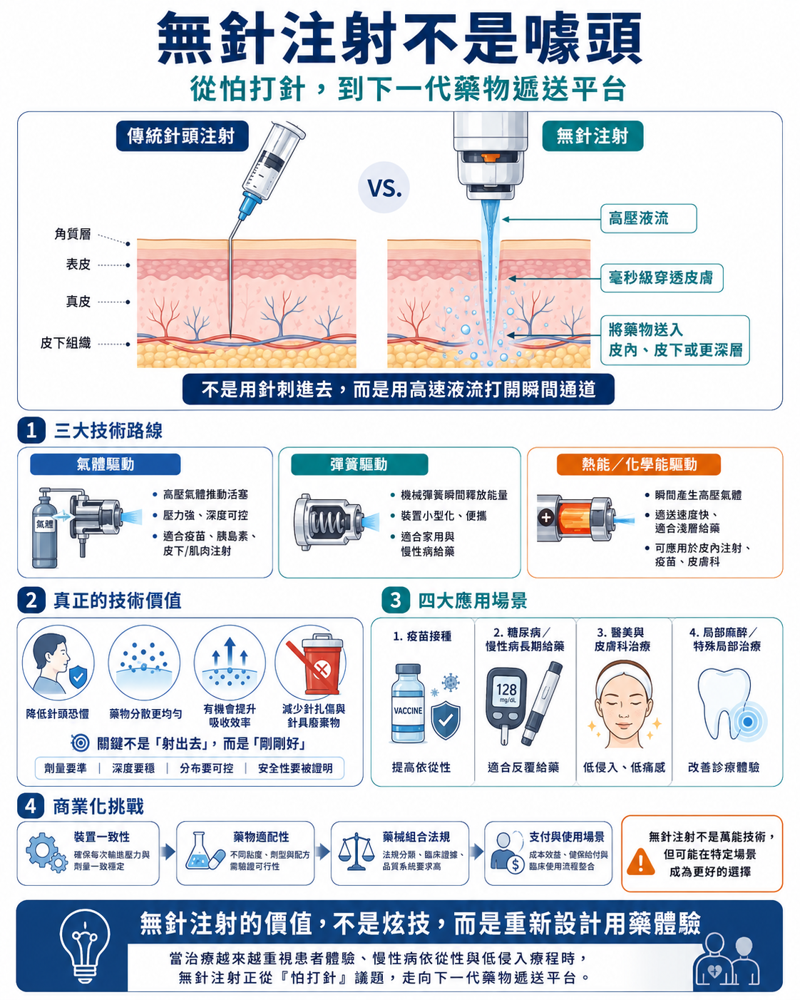
無針注射不是噱頭：從怕打針，到下一代藥物遞送平台
很多人對打針都有陰影。 輕一點的是緊張、皺眉、轉頭不看；嚴重一點的，甚至會暈針、冒冷汗、心跳加快。但很現實的是，人這一生幾乎很難完全逃過注射：疫苗、胰島素、局部麻醉、皮下注射藥物、醫美療程，或某些慢性病長期給藥，都可能需要針頭。 所以，無針注射這個技術乍聽之下很像噱頭。 但它並不是「隔空打針」
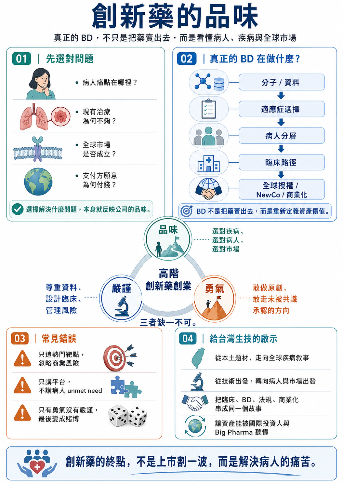
創新藥的品味：真正的 BD，不只是把藥賣出去，而是看懂病人、疾病與全球市場
AI 時代留給人類的東西，可能只剩下三件事：品味、勇氣，還有價值觀。 更精準地說，價值觀其實也包含在品味裡。 因為品味不是美感而已。品味是一個人如何選擇問題、如何判斷價值、如何決定把有限資源下注在哪裡。勇氣則是當你看見一個尚未被共識承認的方向時，仍然願意承擔失敗風險，往前走。 在投資如此，在創
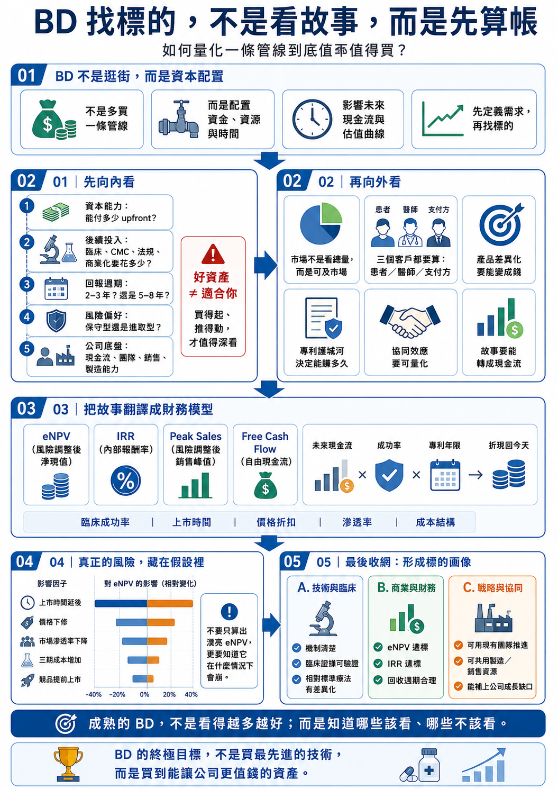
BD 找標的，不是看故事，而是先算帳：如何量化一條管線到底值不值得買？
每一次 BD 決策，本質上都不是「多買一條管線」這麼簡單。 它其實是在決定公司未來幾年的資金流向、研發資源分配、利潤結構，甚至是整條估值曲線。 很多公司做 BD 時，嘴上說的是「補強產品線」、「布局新技術」、「增加策略協同」，但真正進到內部審查時，常常發現問題很大：資產看起來很漂亮，但買不起；科

【基本面系列】藥華藥合理估值是多少？
藥華藥 台灣生技股王市，值站到 3,000 億台幣，到底還有多少是基本面，多少是預付未來？ 藥華藥是少數已經走到全球銷售、營收放大、獲利兌現的公司。 2025 年藥華藥合併營收約 NT$156 億，稅後淨利約 NT$50 億，EPS 13.64 元。2026 年第一季營收約 NT$51 億，EP
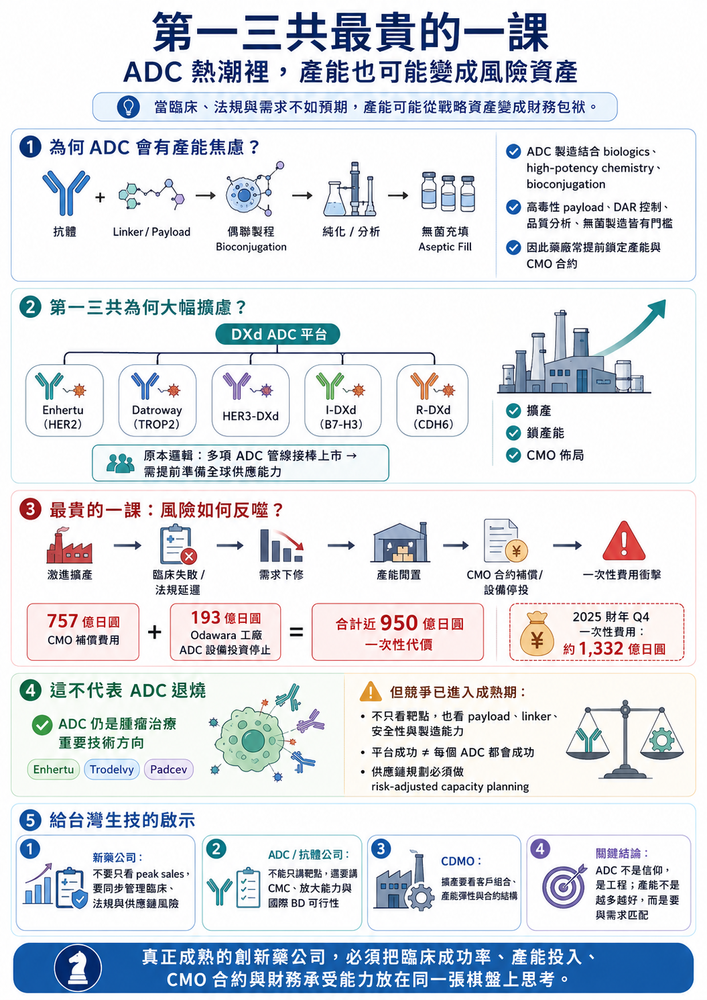
第一三共最貴的一課：ADC 熱潮裡，產能也可能變成風險資產
在 ADC 賽道一路高歌猛進的 Daiichi Sankyo，正在為過去幾年的激進擴產付出代價。 這件事很值得台灣生技產業仔細看。 因為它表面上是一家日本大型藥廠的財務調整，實際上卻是一堂非常昂貴的產業課：新藥公司不能只看需求峰值，也要管理臨床失敗、法規延遲、產能閒置與 CMO 合約反噬的風險。
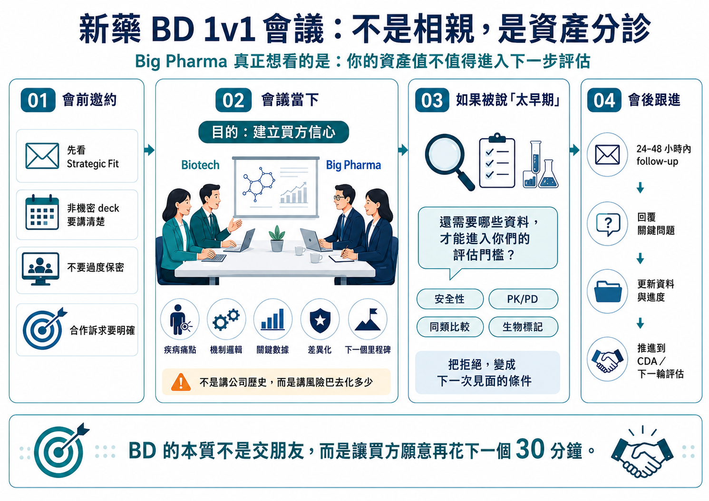
BD 怎麼跟 Big Pharma 1v1 開會？不是混臉熟，而是讓買方願意往下一步走
這幾年，新藥產業的 BD 交流會，已經變成各大 biotech 和 pharma 的標準行程。 海外的 JPM Healthcare Conference、BIO International Convention、BIO-Europe、LSX World Congress，到亞洲的 BioJapa
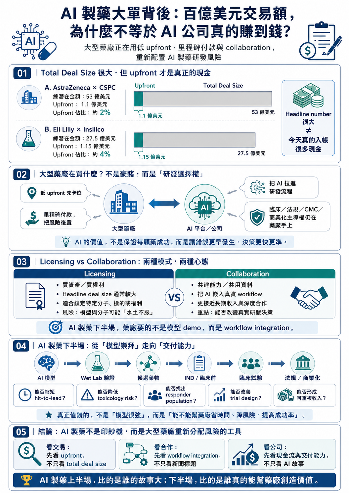
AI 製藥大單背後：百億美元交易案，不代表 AI 公司真的拿到百億美元
AI 製藥最近成為全球醫藥產業最容易被放大的敘事之一。 只要看新聞標題，很容易以為這個賽道已經進入「印鈔機模式」：一筆合作動不動 10 億美元、20 億美元、50 億美元，甚至上看百億美元。大型藥廠一邊喊專利懸崖，一邊大手筆擁抱 artificial intelligence、foundation
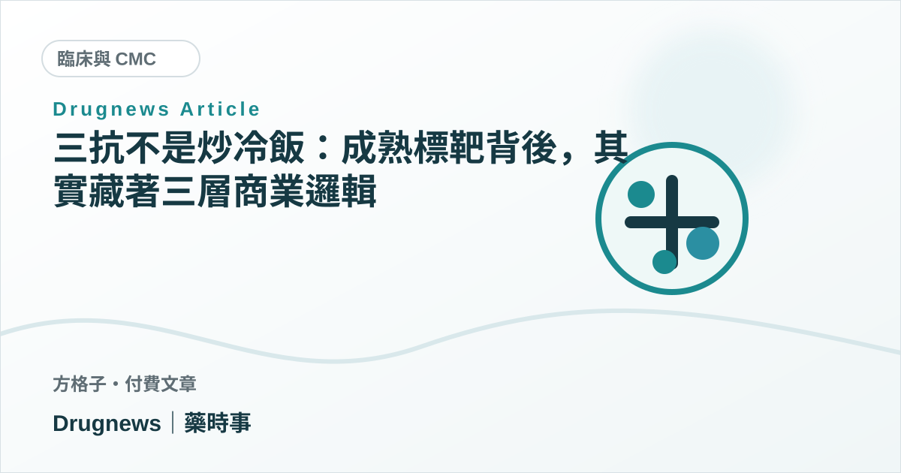
三抗不是炒冷飯：成熟標靶背後，其實藏著三層商業邏輯
雙抗火完，現在輪到三抗。 過去幾年，抗體工程的故事一波接一波。單抗之後是雙抗，雙抗之後是 ADC，ADC 之後又有人喊出三特異性抗體（trispecific antibody）的新時代。乍看之下，這很像醫藥圈又開始炒冷飯：同樣一批標靶，被換個分子格式重新包裝，再拿到資本市場講一遍新故事。 但如果
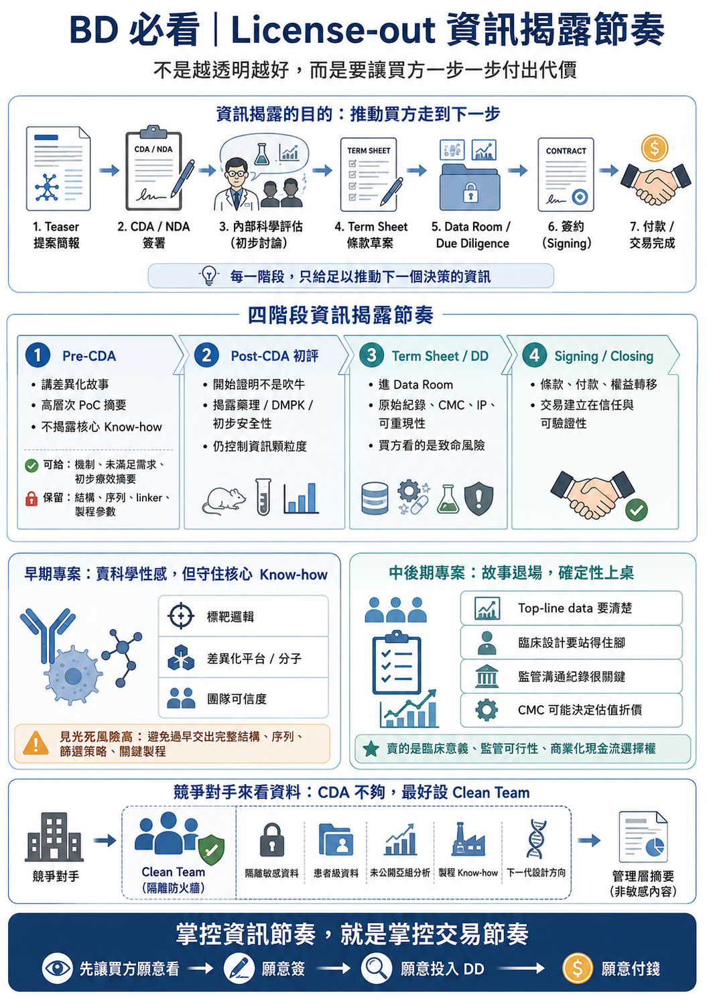
BD 必看：License-out 資訊揭露節奏，不是越透明越好，而是要讓買方一步一步「付出代價」
做 BD，最常遇到的不是對方沒興趣，而是對方一上來就很有興趣。 問題也出在這裡。 手上好不容易有一條潛力管線，終於等到 Big Pharma 或資金雄厚的買方回信，對方開口第一句常常就是：「可以先把完整資料包發來看看嗎？」 這時候，賣方通常會陷入一種很難受的拉扯。 給太多，怕被白嫖。 尤其
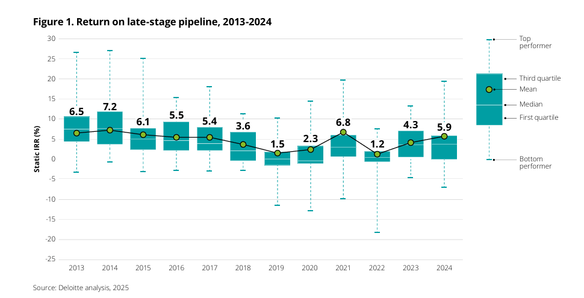
那個喊了 40 年的「創新藥回報率已死」鬼故事，唬住了多少人？
每隔幾年，製藥業就會流行一次「創新藥研發已經不賺錢」的說法。 這個說法通常會搭配一張很嚇人的圖：創新藥研發的內部報酬率一路下滑，從過去的雙位數，跌到只剩個位數，甚至一度跌到接近零。Deloitte 在 2025 年發布的《Measuring the return from pharmaceutic
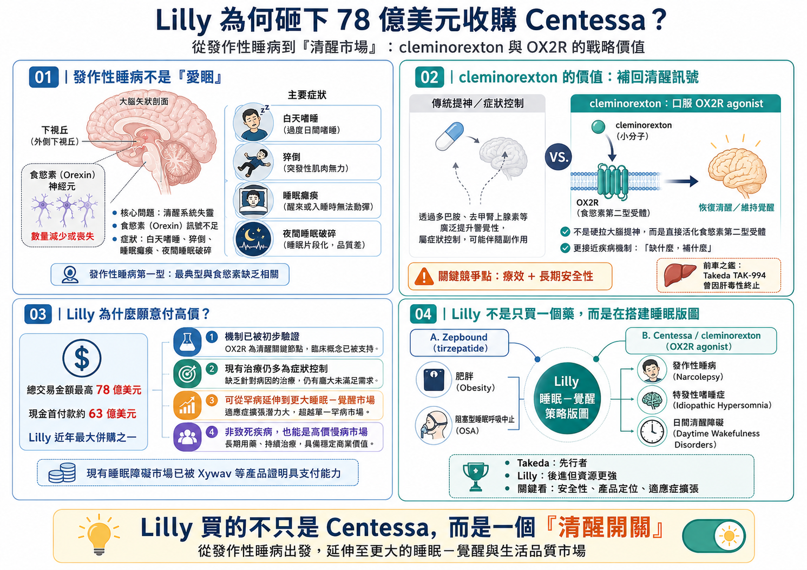
Lilly 今年最貴併購案：為什麼一個「清醒開關」值 78 億美元？
Lilly 今年的併購節奏，已經不是「補管線」這麼簡單。 短短幾個月，從發炎、體內 CAR-T、ADC、AI 製藥到睡眠障礙，Lilly 幾乎把未來十年幾個最有想像力的技術方向都掃了一輪。 但如果把這幾筆交易攤開來看，最貴的一張支票其實不是給體內 CAR-T，也不是給 ADC，而是給一家做睡眠與
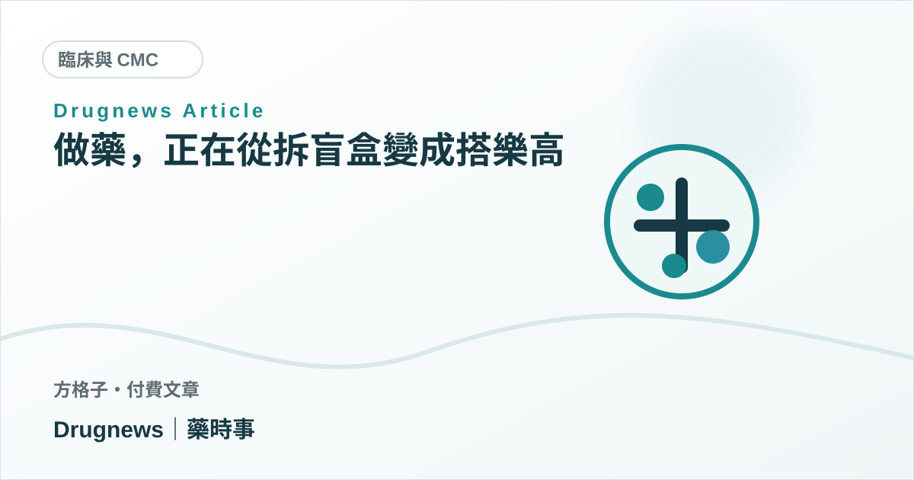
做藥，正在從拆盲盒變成搭樂高
樂高公司在 1932 年成立時，只是丹麥一家木匠創辦的木製玩具小工坊。 真正改變世界的，是 1958 年那塊帶有鉚釘與管狀結構的互鎖塑膠積木。 那個設計最迷人的地方，不是單一積木本身有多複雜，而是它把複雜世界拆成一個個標準化、可相容、可重複使用的基礎單元。只要規格對了，不同積木就能拼出房子、車子
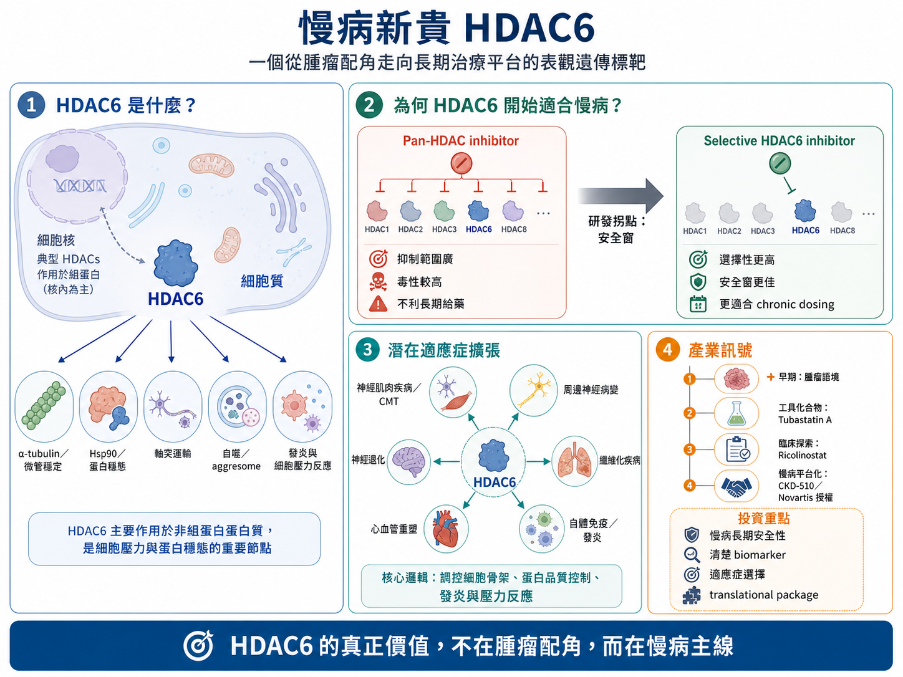
慢病新貴 HDAC6：一個從腫瘤配角走向長期治療平台的表觀遺傳標靶
在創新藥研發裡，真正值得關注的標靶，往往不是一開始就站在聚光燈中央的那種。 有些標靶，是慢慢從配角變成主角。 HDAC6（Histone Deacetylase 6） 就是這樣一個標靶。 過去，HDAC 相關藥物最常被放在腫瘤語境裡討論。從早期 pan-HDAC inhibitor 到後來更選
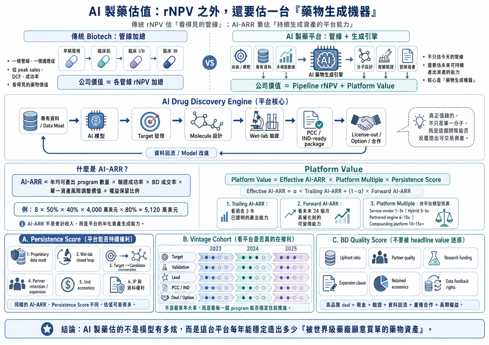
深度解析：AI 製藥公司的估值體系
rNPV 之外，必須開始估一台「藥物生成機器」 AI 製藥公司最難被估值的地方，不在於模型有多炫，也不在於簡報裡寫了多少個 foundation model。 真正困難的是：傳統創新藥估值方法，往往只會估「已經看得見的管線」，卻很難估「持續生成管線的能力」。 這就是今天 AI drug dis
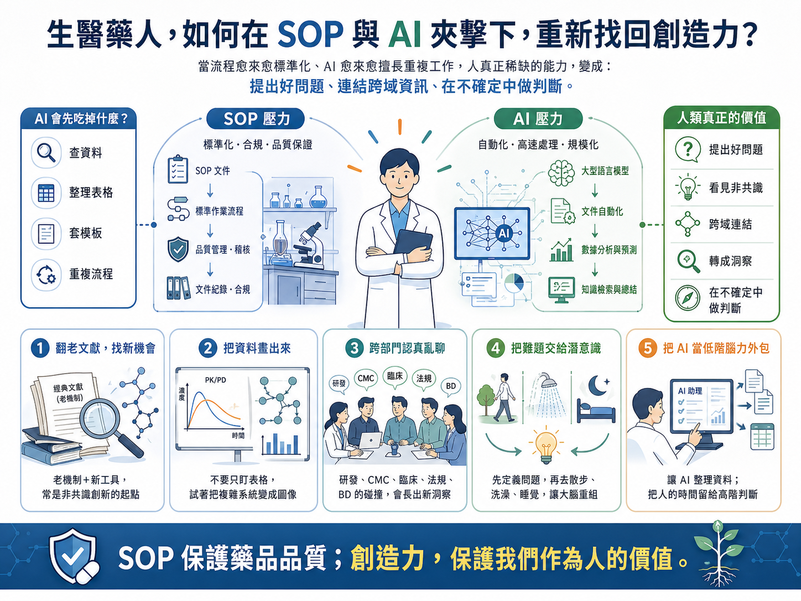
生醫藥人，如何在 SOP 與 AI 夾擊下，重新找回創造力？
有時候真的會覺得，做生物醫藥這一行，很容易精神分裂。 一方面，公司會議裡永遠都在喊創新。 老闆說，管線不能再跟著別人後面卷。 策略會說，我們要做 differentiated asset。投資人說，市場不想再聽 me-too 故事。BD 團隊說，現在 MNC 只買有非共識價值的資產。 但另一
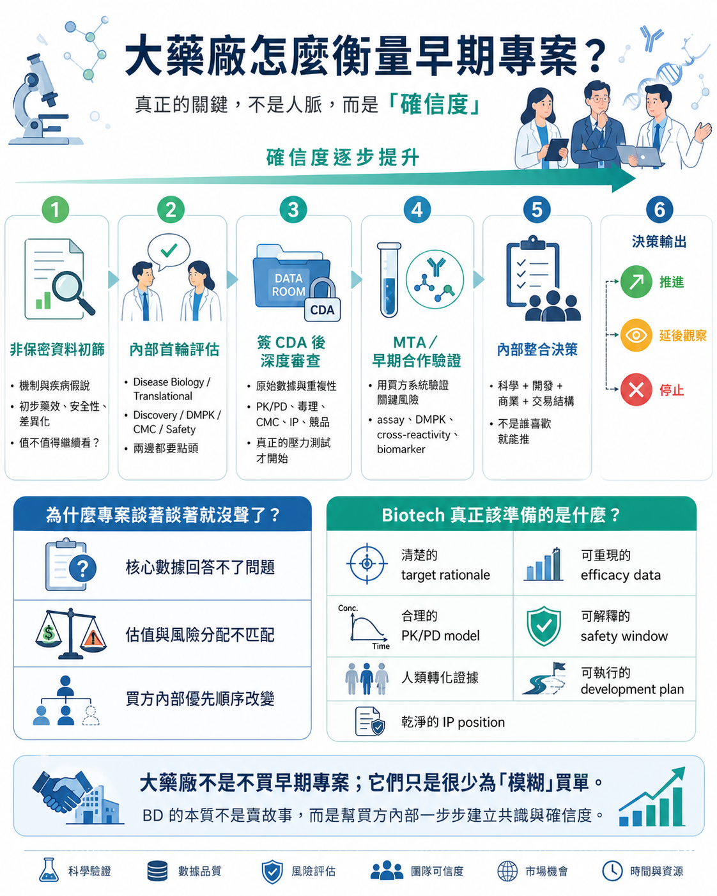
大藥廠怎麼衡量早期專案？真正的關鍵，不是人脈，而是確信度
很多 Biotech 跟跨國大藥廠打交道時，常常會覺得對方的態度像「薛丁格的貓」。 一開始好像很有興趣，會議也開了，問題也問了，CDA 也簽了；但過一陣子又突然變冷，甚至直接沒有下文。於是很多人會把原因歸結為人脈不夠、時機不好、對方內部政治複雜，或 BD 談判技巧還不夠成熟。 這些因素當然存在。
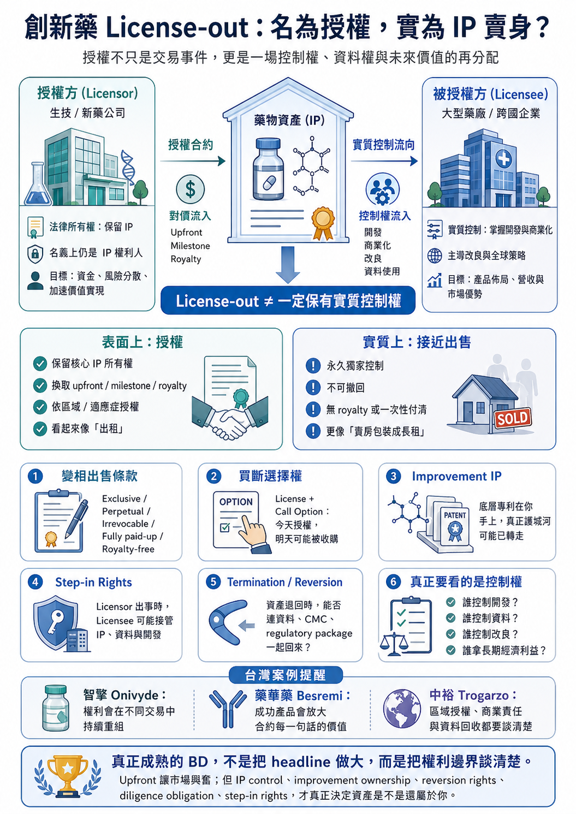
創新藥 License-out：名為授權許可，實為 IP 賣身？
在創新藥產業裡，License-out 幾乎是近幾年最火的關鍵字。 從 ADC、雙抗，到各種小分子、自體免疫、代謝與 CNS 管線，亞洲與全球 Biotech 靠一筆又一筆授權大單，在資本寒冬裡硬是殺出一條路。對很多早期公司來說，License-out 不只是交易事件，而是續命工具、估值錨點，甚至

【製藥巨頭發展史20】再生元 (Regeneron) 如何從 Biotech 成長為 MNC？
2020年4月初的某天清晨，一輛銀色轎車穿過紐約街頭，一位頭髮花白的男士坐在後座上，面容有幾分憔悴。在過去的兩三個月內，他每天只睡四、五個小時，即使是絕大多數紐約人都開始居家辦公的時候，他仍然每天都去公司實驗室報到。在冷清的街道上，他的汽車偶爾才與另一輛車交匯，這座城市已經不復存在他過去60年成長和

【製藥巨頭發展史19】曾經的藥王艾伯維(Abbvie) 招招精狠！
2020年3月下旬，美國東部的陽光像水晶一樣地照進了芝加哥一間格調簡約卻又設施豪華的辦公室內。室內的溫度很舒適，但仍封鎖不了窗外的寒意，2020年對整個地球都是異常艱難的一年。一位下顎內收、眼光如炬的男士坐在寬大舒適的辦公桌前。他對著視訊螢幕上的對方和公司其他高管，聲音平靜且平和地說：「好的，沒有問

【製藥巨頭發展史18】藥王不在的 默沙東(MSD) 焦慮大家都看得見
01 一騎絕塵的哈姆雷特王子 2009年，風雪漫天的冬季又一次光臨了與波士頓緊鄰的小城麻省劍橋（Cambridge）。一位年輕人踏著街道上厚厚的積雪，重新裹了裹圍巾，走向自己的實驗室。他來到這個城市已經好幾年，但這個冬天似乎特別寒冷。畢竟，對任何一個在事業上有睏頓的年輕人，冬天的氣溫總要低幾度。

【製藥巨頭發展史17】安進（Amgen）的法律能力你必需懂？
1981年初夏，在某一期的《科學》期刊上刊登了一則極為簡單的徵才廣告，一家科技新創公司要招募一名新藥研究員。可能這家公司想要省點錢，因此這則廣告的字數有限，既沒公司名稱，也沒職位介紹，並沒有引起多少讀者的注意。不過，還是有位四十歲的科學家給該公司遞了履歷，這點有限的廣告費沒有白花。這位求職者似乎在其

【製藥巨頭發展史16】羅氏(Roche)吞下超新星 基因泰克(Genentech)，自此高枕無憂？
1999年的一個早晨，美國舊金山市，一位內心深沉憂傷的中年人為自己安排了一次特別的醫院探訪。出發前，他以為自己已經做好了足夠的心理準備，但當房門打開的那一瞬間，他看見病床上憔悴無言的老友向自己投來了一個虛弱無比的微笑，一顆心還是猛烈地顫抖起來，眼淚不禁奔湧而出。面前這位被晚期腦癌折磨到一句話都不能再

【製藥巨頭發展史15】有了再生元的賽諾菲(Sanofi)，真正的絕招是啥?
01 一顆治癒人心的良藥靈丹 1998年，美國舊金山市的一家醫院病房裡，一個像洋娃娃一般漂亮的寶寶甦醒過來，用她無辜的大眼睛看了看這個世界。寶寶的床邊，一位31歲的男子慈愛而溫柔地握著她的小手，內心卻有一種被揉碎了五腑六髒般的痛苦。剛在醫生的辦公室裡，他被告之自己剛剛15個月大的女兒Megan被確

【製藥巨頭發展史14】似乎 東山不再起的百年藥企，拜耳(Bayer)
01 不再被信任的CEO 2019年4月，德國勒沃庫森（Leverkusen）乍暖還寒。一個頭髮微禿的中年男士灰頭土臉地坐在會議中，承受著眾多投資者對他一浪高過一浪的指責。看到大家齊刷刷地投過來那種失望而憤怒的眼神，他只想逃避。如果此時此刻地上能夠裂出一道縫，相信他會毫不遲疑地鑽到裡面。 2016

【製藥巨頭發展史13】宇宙大藥廠輝瑞(Pfizer)，還有併購以外的法寶嗎？
01 一場寒冷的董事會議 2010年12月4日，紐約曼哈頓中城區的一幢豪華辦公大樓裡，一位中年男子勉為其難地向一間會議室走去。雖然他不願意麵對這一刻，但公司內部的政治鬥爭已經持續了相當長的一段時間，有一些面對面的衝突是逃避不了的。秘書把門打開之後，他看見自己所熟悉的幾位董事會成員面色鐵青地坐在裡面

【製藥巨頭發展史12】新的減肥藥王禮來(Lilly)，自主研發究竟能走多遠？
01 百憂解的問世 2014年8月，美國加州警方接獲報警電話後，便火速趕往位於克里夫海地的一棟豪宅。當他們打開門後，發現住宅的男主人在家中自縹身亡。讓他們震驚的是，死者竟是時年63歲的電影巨星羅賓威廉斯（Robin Williams）。這怎麼可能？他所演出的一系列電影角色都曾深深滋養過我們的靈魂：

【製藥巨頭發展史11】諾和諾德(Novo Nordisk) 想靠GLP-1通殺全場?
01 一城輝煌再下兩城 2020年5月的一天，丹麥首都哥本哈根在夢幻般清澈的藍天白雲中迎來了一年最好的季節。一位中年男子望著窗外一幢幢童話般的房子，眼神中有一份禁不住的喜悅和滿足。手機再次響起'叮咚'的一聲，他低頭一看，又一次會心的一笑。自從新聞發布以後，他已經接到了無數朋友和同行的簡訊與電話，祝

【製藥巨頭發展史10】必治妥施貴寶(BMS)的興衰轉身與新週期
01 世紀名藥，花落誰家 1977年，紐約曼哈頓每一天都繁華如昔。在白天的車水馬龍和夜晚的炫目霓虹中，它彷彿時時刻刻都在向世界宣告，「我就是地球的中心，我就是經濟的心臟」！然而，曼哈頓最北部的一間實驗室內，一位頭髮黝黑的白人女性正專注於顯微鏡和瓶瓶罐罐之中，她那份平和寧靜的神態與咫尺之外的喧囂有著

【製藥巨頭發展史9】跨越300多歲的葛蘭素史克（GSK）能否再次回春？
2015年3月初的某一天，春雨之後，緊鄰英國倫敦的布倫特福德市寒冷如冬。一間氣派豪華的會議室中，端坐著眾多舉止優雅且衣著光鮮的商業人士。在最中央的位置上，一位髮線退到了後腦勺的中年男士在厚厚的一疊法律文書上一一籤上了自己的名字。在所有人目光的聚焦之下，他像平常一樣表情鎮定，沒有人看得出他此時此刻的心

【製藥巨頭發展史8】阿斯特捷利康(AZ)，如何從被收購走到光榮稱霸？
01 守城者：索維奧與阿斯特捷利康的危機逆轉 2014年，新年後的一個早晨，英國劍橋市保持著千禧年不變的優雅與寧靜。由於世界名校劍橋大學的存在，這座10萬多人口的小城市有著不尋常的歷史和文化底蘊。它淳樸的田園風光中點輟學著各種時代的建築，有十五世紀哥德式的，也有十九世紀維多利亞式的，當晨光灑滿了田

【製藥巨頭發展史7】福泰製藥 (Vertex)傳奇
01 被夢想逼到創業之路的一代英才 1989年，一位相貌老沉、髮際線靠後、留著濃密絡腮鬍子的男士，在他的新公司門口拍下了一張照片。他的笑容中有種堅定的樂觀，厚厚的鏡片也擋不住他眼神裡的雄心壯志。如果不說，誰也看不出這位男士才38歲。推開門，這家公司不過是一間又擁擠又簡陋的實驗室，一個月前它才剛從一

【製藥巨頭發展史6】當規模遇上聚焦：諾華(Novartis) 如何用「剝離＋併購」翻身為藥王
01 一場寒冷的大規模裁員 2011年底的某天下午，兩位男士焦急不安地走進了一間超大的辦公室，其中一位手中捧著一份厚厚的報告。看到了辦公桌後的另一位男士，他們不約而同地先後說道：“我們四年前獲批上市的藥品最近的臨床試驗發現了一些頗為嚴重的副作用，公司的研發部門與獨立的安全顧問委員會都建議提早結束該
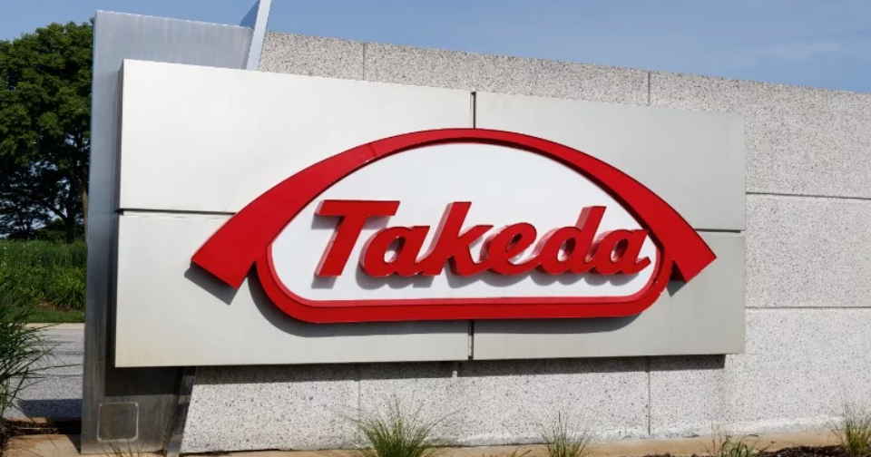
【製藥巨頭發展史5】唯一的亞洲藥廠巨頭---武田（Takeda）只有併購能走向巨大
01 意義重大的一場法日衝突 2018年12月的日本，初冬已經來臨。傍晚時分，一位中年日本男士在位於大阪的一間豪宅內安靜地沉思著。他的雙眼注視著一把武士刀，那是曾祖父輩手裡傳下來的家族信物。他暗問自己，「兩百多年前老祖宗代代傳下來的財產，會在我的手中丟失嗎？「 不過，這份財產不是這把武士刀，而是武
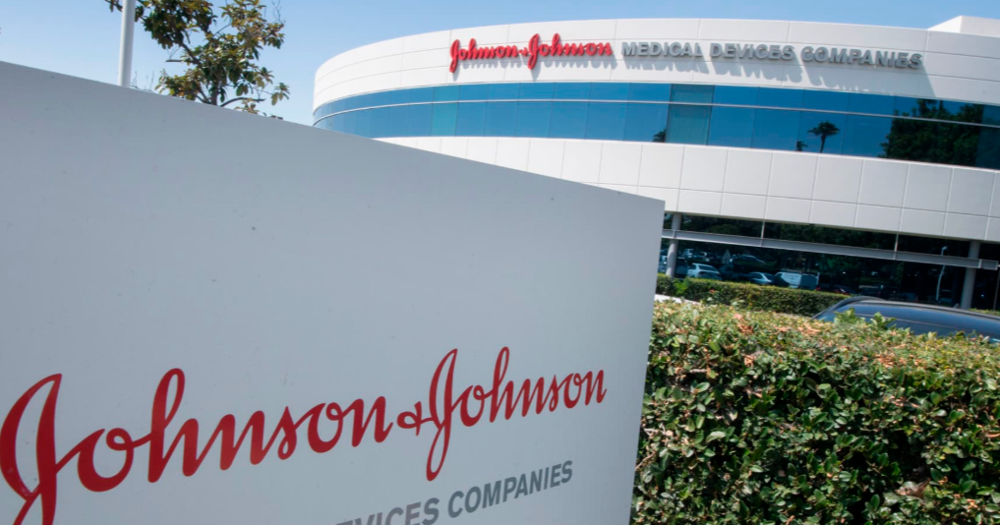
【製藥巨頭發展史4】百年 嬌生（JNJ），能否再走一百年？
01 秦始皇兵馬俑所作的大媒 在1970年代中，在西安的一個悶熱夏天，一位金髮碧眼的外國人正看著一隻兵馬俑頭像憂心忡忡，他的焦慮感並不亞於醫生在照顧一位病入膏肓的病人。仔細端詳了二十多分鐘後，他請旁邊一位身穿藏青色卡嘰布外套的男士幫他向身後的翻譯，他要盡快給比利時撥一個國際長途電話。 電話接通後
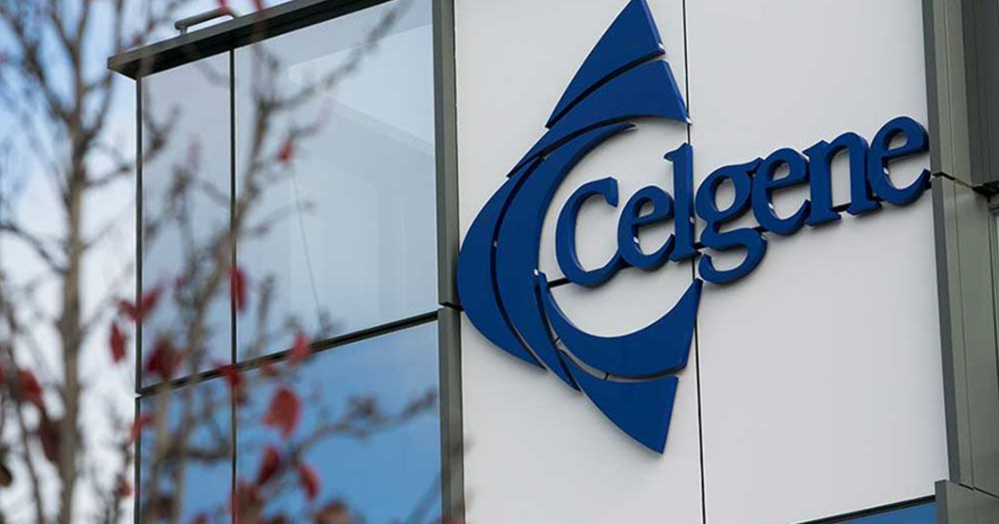
【製藥巨頭發展史3】新基（Celgene）的崛起
01 一個獵物的修練史 2011年12月，湖人隊對公牛隊的第一場比賽在斯坦普斯中心開戰， 科比以一個漂亮的打板扣籃，再次為湖人隊拿下了一場勝利，最終以102：89取得開門紅。這個球場的場內VIP席堪稱籃球史上最貴，一個賽季的門票就高達11萬美元。而且，這些座位並不是光有錢就能夠坐得上去的，它們每一
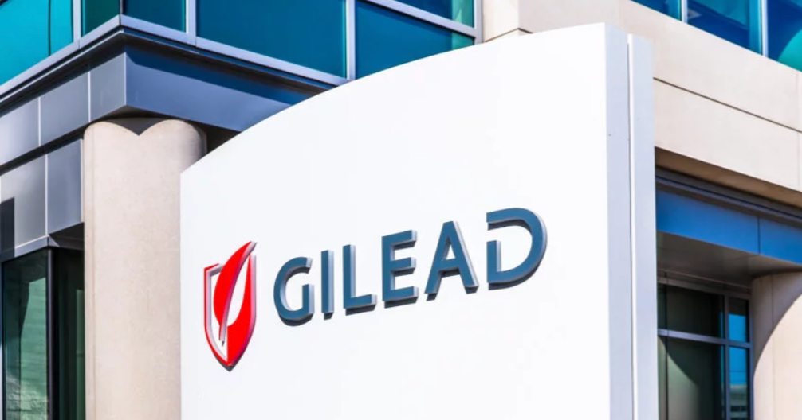
【製藥巨頭發展史2】吉利德（Gilead）搬起石頭砸自己的腳
2016 年 3 月的一個傍晚，加州福斯特城的陽光在下班鐘聲裡慢慢軟了下來。一位銀髮碧眼的中年人坐在辦公室裡反覆起身、又坐回去，像在等一通命運會挑在此刻撥出的電話。鈴聲終於響起，他幾乎是搶著按下接聽。話筒另一頭傳來公司首席法律顧問的聲音：「Milligan 先生，陪審團已經做出裁決，有一個好消息，也
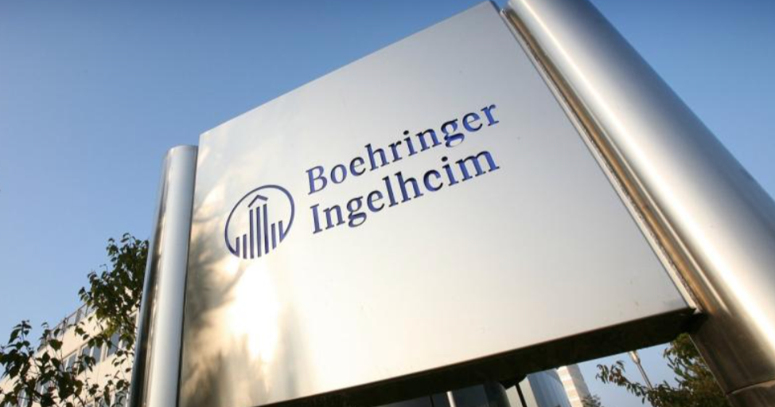
【製藥巨頭發展史1】 勃林格殷格翰（BI）教你如何富可過三代!
01 傳承與棋局：Hubertus 帶路的 BI 大佈局 初夏的陽光把新英格蘭的天空擦得發亮。2001 年的劍橋，查爾斯河像一條緩緩流動的緞帶，映著兩千多頂學士帽的陰影。人群裡，有一位腦門略高、金髮碧眼的德國青年，正隨著隊伍踏入麻省理工學院的圓頂建築。